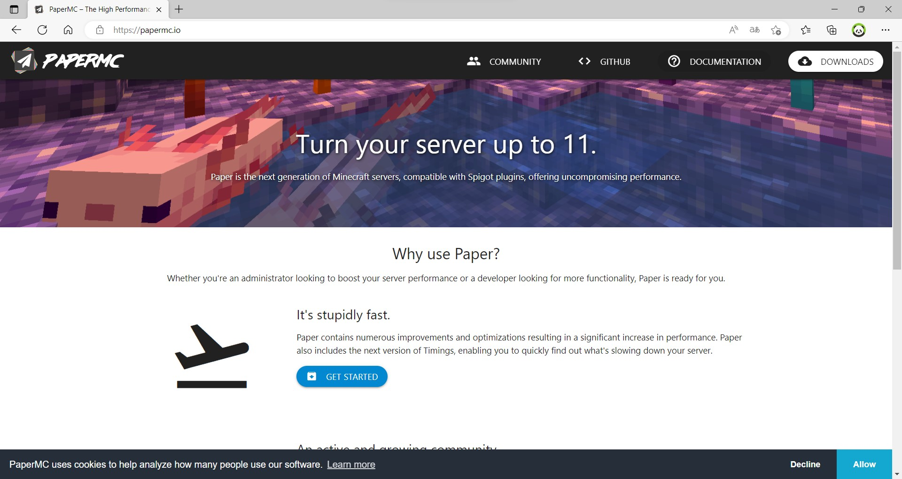
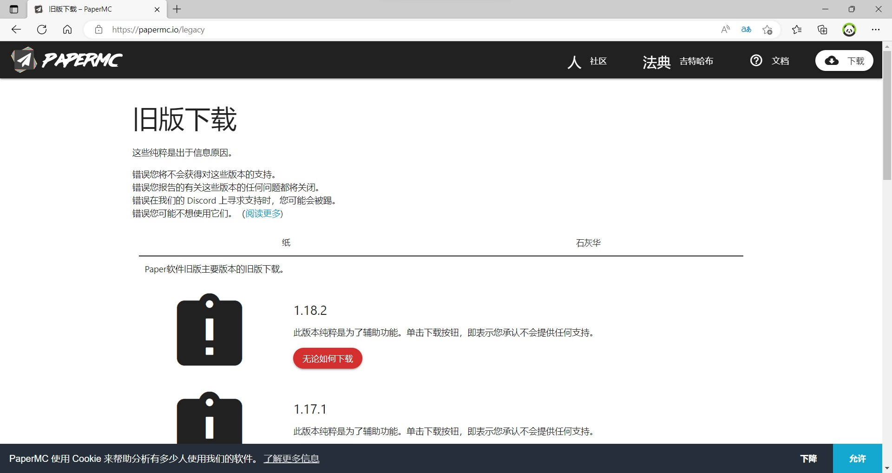
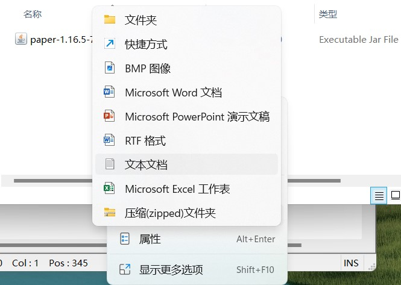
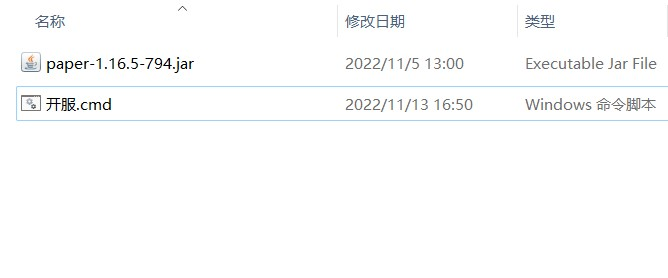
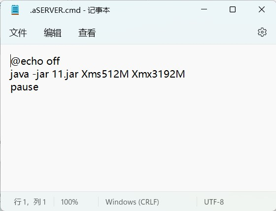
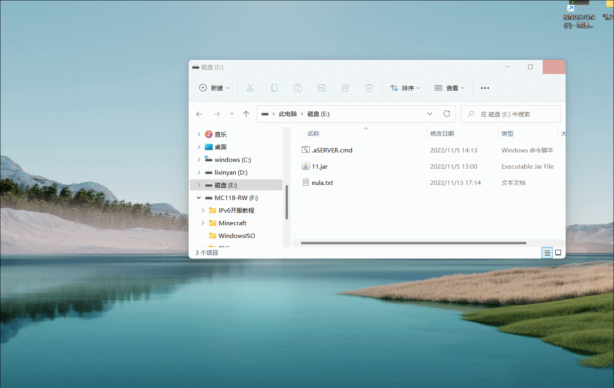

1.在服务器API官网或下载网站上下载API文件，后缀名为.jar


2.安装Java Development Kit 16至C盘。
3.把下载好的服务器Api放到一个你想要的文件夹里，在同级目录下新建一个后缀名为.bat或.cmd的文件


打开（编辑）文件，输入下图代码

5.再次在同级目录下创建名为eula的文本文档,输入“eula=true”
6.双击你创建的开服bat或cmd文件，效果应为下图

2022 Minecraft_118制作
回到主页